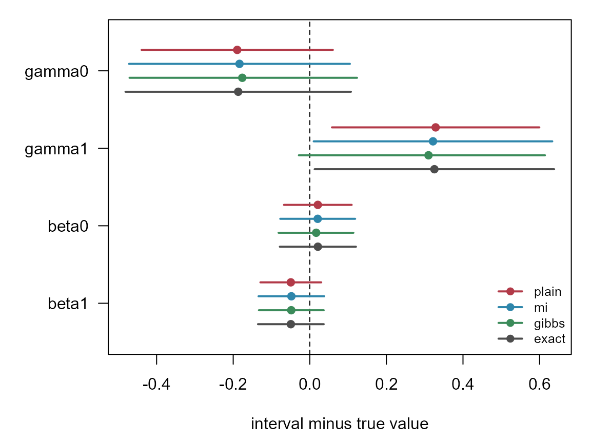

Some models carry a discrete latent variable that, once known, turns
the fit into ordinary weighted GLMs: occupancy (was the site occupied?),
N-mixture (what was the true count?), zero inflation (is this zero
structural?). tulpa_em_laplace() runs the
expectation-maximisation (EM) loop for that pattern. The model enters
only through two callbacks, which supply the latent-variable posterior
and the GLM blocks it implies, and the driver fits each block with
tulpa_laplace() and iterates to convergence. This article
writes both callbacks for a zero-inflated Poisson model with a known
truth, runs the driver, pools multiple imputations, and samples the
joint posterior with Metropolis-Hastings (MH) within Gibbs. The EM and
imputation intervals are also compared with maximum likelihood over 100
simulated datasets. Model packages such as tulpaObs build their
occupancy and N-mixture fitters on this driver; the callbacks below are
the whole contract.
- Simulate counts with known abundance and zero-inflation coefficients.
-
Write the
e_stepandm_step_encodecallbacks. -
Fit with
tulpa_em_laplace()and read convergence and estimates. -
Pool imputations with
correction = "mi"or sample the joint posterior withcorrection = "gibbs". - Compare intervals against the exact fit and the truth.
Installation is covered in Get started.
The model
Each site is either at risk (, the species can be counted there) or a structural zero (). The count is Poisson only at sites at risk:
where is the probability that site is at risk, its expected count when it is, a covariate of the zero-inflation part and a covariate of abundance. If were observed, would come from a logistic regression of on and from a Poisson regression of on over the sites with .
is not observed, so the E-step replaces it with its posterior probability under the current estimates. A positive count proves ; a zero can come from either branch:
The M-step maximises the expected complete-data log-likelihood. For the zero-inflation part that is , a weighted Bernoulli log-likelihood, entered as two rows per site: at weight and at weight . For the abundance part it is the Poisson log-likelihood of each count at weight .
Simulating data
300 sites, with , so about 69% of sites are at risk at and fewer where is large, and , an expected count of at an average site at risk.
n <- 300
gamma_true <- c(0.8, -1.0) # logit P(at risk): intercept, slope on v
beta_true <- c(1.0, 0.5) # log expected count: intercept, slope on x
sim_zip <- function(n) {
x <- rnorm(n)
v <- rnorm(n)
z <- rbinom(n, 1, plogis(gamma_true[1] + gamma_true[2] * v))
y <- z * rpois(n, exp(beta_true[1] + beta_true[2] * x))
list(y = y, X = cbind(1, x), Z = cbind(1, v), z = z)
}
set.seed(20261102)
dat <- sim_zip(n)
c(structural_zeros = mean(dat$z == 0), observed_zeros = mean(dat$y == 0))
#> structural_zeros observed_zeros
#> 0.3300000 0.4266667A third of the sites are structural zeros, and the Poisson branch
adds the rest of the 43% observed zeros. dat$z is kept for
the simulation only; no fit below reads it.
The two callbacks
e_step(fits, ...) receives the current block fits, a
named list of tulpa_laplace() results whose
$mode holds the coefficients, and returns
list(weights = ...). On the first iteration
fits is an empty list, so the callback returns a starting
guess: every zero at 0.5. m_step_encode(weights, ...)
returns one block per GLM, each a list with y,
X, family and here weights. A
factory builds both from one dataset, so the same code serves the
replication further down.
zip_callbacks <- function(d) {
y <- d$y; X <- d$X; Z <- d$Z; n <- length(y)
e_step <- function(fits, ...) {
if (!length(fits)) return(list(weights = ifelse(y > 0, 1, 0.5)))
eta <- drop(Z %*% fits$occ$mode)
log_p0 <- plogis(eta, log.p = TRUE) - exp(drop(X %*% fits$abund$mode))
list(weights = ifelse(y > 0, 1,
plogis(log_p0 - plogis(-eta, log.p = TRUE))))
}
m_step_encode <- function(weights, ...) list(
occ = list(y = rep(c(1, 0), each = n), X = rbind(Z, Z),
weights = c(weights, 1 - weights), family = "binomial"),
abund = list(y = y, X = X, weights = weights, family = "poisson")
)
list(e_step = e_step, m_step_encode = m_step_encode)
}
cb <- zip_callbacks(dat)The binomial block carries the soft labels in weights,
never as a fractional y; ?tulpa_em_laplace
explains why a fractional response is a different objective and is
refused.
Fitting
tulpa_em_laplace() alternates the two callbacks until
the largest relative change in any coefficient falls below
tol (default 1e-4). The E-step weights are
damped between iterations, (1 - d) * new + d * previous
with damping = 0.3 by default.
fit <- tulpa_em_laplace(cb$e_step, cb$m_step_encode, verbose = FALSE)
c(converged = fit$converged, iterations = fit$n_iter)
#> converged iterations
#> 1 19fit$history records the change per iteration:
plot(fit$history$iter[-1], fit$history$delta[-1], log = "y", type = "b",
pch = 19, xlab = "EM iteration", ylab = "max relative change")
abline(h = 1e-4, lty = 2)The change falls by a nearly constant factor per iteration, the linear convergence of EM.
Each block fit carries its mode and H_beta, the
curvature of the weighted M-step objective at the mode. Its inverse
gives a standard error that treats the final weights as known.
em_table <- function(fit) {
est <- c(fit$fits$occ$mode, fit$fits$abund$mode)
se <- c(sqrt(diag(solve(fit$fits$occ$H_beta))),
sqrt(diag(solve(fit$fits$abund$H_beta))))
data.frame(est = est, se = se)
}
coef_names <- c("gamma0", "gamma1", "beta0", "beta1")
truth <- c(gamma_true, beta_true)
plain <- em_table(fit)
round(data.frame(truth, plain, row.names = coef_names), 3)
#> truth est se
#> gamma0 0.8 0.610 0.127
#> gamma1 -1.0 -0.671 0.138
#> beta0 1.0 1.021 0.045
#> beta1 0.5 0.450 0.041The abundance coefficients sit within 1.3 standard errors of the truth. The zero-inflation slope is estimated at -0.67 against a truth of -1.0, more than two of its standard errors away; one dataset can do that by chance, and the replication below measures how often.
A reference: the exact maximum-likelihood fit
The zero-inflated Poisson likelihood has a closed form, and for , so it can be maximised directly and its standard errors read off the observed information of the marginal likelihood. That is the answer EM approximates.
zip_mle <- function(d) {
nll <- function(p) {
psi <- plogis(drop(d$Z %*% p[1:2]))
lam <- exp(drop(d$X %*% p[3:4]))
-sum(ifelse(d$y == 0, log(1 - psi + psi * exp(-lam)),
log(psi) + dpois(d$y, lam, log = TRUE)))
}
o <- optim(rep(0, 4), nll, method = "BFGS", hessian = TRUE)
data.frame(est = o$par, se = sqrt(diag(solve(o$hessian))))
}
exact <- zip_mle(dat)
round(data.frame(em_est = plain$est, mle_est = exact$est,
em_se = plain$se, mle_se = exact$se, row.names = coef_names), 3)
#> em_est mle_est em_se mle_se
#> gamma0 0.610 0.613 0.127 0.150
#> gamma1 -0.671 -0.675 0.138 0.160
#> beta0 1.021 1.021 0.045 0.051
#> beta1 0.450 0.451 0.041 0.044The EM estimates agree with the maximum-likelihood estimates to within 0.004. The EM standard errors are smaller, 0.138 against 0.160 for : the weighted M-step treats each as data, so the uncertainty about which zeros are structural is missing from them.
Correcting the standard errors
correction = "mi" draws independent hard labels
at the converged estimate and refits every block. Rubin’s rules
(rubins_pool()) add the mean within-imputation variance to
times the variance between the
estimates. The result in $pooled is a Tier 2 approximation
from complete-data Laplace fits.
correction = "gibbs" alternates a label draw at the
current sampled coefficients with an MH update of those coefficients.
The complete-data Laplace mode and full precision define a
multivariate-t proposal. The acceptance ratio uses the true
complete-data likelihood and normalized Gaussian priors, together with
the proposal density at both states. This composition has invariant
posterior
,
conditional on fixed block dispersion and random-effect covariance. It
is Tier 1.
Both modes retain the EM initialization in $fits. Gibbs
returns a parameter matrix in $draws and a paired
latent-state list in $latent_draws. Its E-step reads
sampled parameter values from each block’s mode and
beta. The chain needs warmup and enough iterations to
estimate its Monte Carlo error.
set.seed(1)
fit_mi <- tulpa_em_laplace(cb$e_step, cb$m_step_encode,
correction = "mi", verbose = FALSE)
set.seed(2)
fit_gibbs <- tulpa_em_laplace(cb$e_step, cb$m_step_encode,
correction = "gibbs", n_gibbs = 8000L,
correction_control = list(warmup = 1000L),
verbose = FALSE)
pooled_table <- function(fit) with(fit$pooled, data.frame(
est = c(occ$mean, abund$mean), se = c(occ$se, abund$se)))
chain_table <- function(fit) data.frame(
est = colMeans(fit$draws), se = apply(fit$draws, 2, sd),
lower = apply(fit$draws, 2, quantile, probs = .025),
upper = apply(fit$draws, 2, quantile, probs = .975))
fit_mi$pooled$occ[c("V_within", "V_between")]
#> $V_within
#> [1] 0.01632402 0.01928938
#>
#> $V_between
#> [1] 0.005059718 0.005687418For the zero-inflation block the between-draw variance is 31% (intercept) and 29% (slope) of the within-draw variance, the share of the uncertainty the plain EM standard error leaves out.
methods <- list(plain = plain, mi = pooled_table(fit_mi),
gibbs = chain_table(fit_gibbs), exact = exact)
se_tab <- sapply(methods, `[[`, "se")
rownames(se_tab) <- coef_names
round(se_tab, 3)
#> plain mi gibbs exact
#> gamma0 0.127 0.147 0.151 0.150
#> gamma1 0.138 0.159 0.163 0.160
#> beta0 0.045 0.050 0.050 0.051
#> beta1 0.041 0.044 0.043 0.044The Gibbs column reports posterior standard deviations. The other
columns report standard errors from the EM curvature, Rubin pooling and
observed maximum-likelihood information. The fitted Gaussian prior also
enters the Gibbs posterior. fit_gibbs$mean_accept reports
conditional MH acceptance; fit_gibbs$target records the
sampled distribution.
Comparing the intervals
The plot shows Gibbs posterior quantiles and estimate standard errors for the other methods, each relative to the simulated true value.
cols <- c(plain = "#B23A48", mi = "#2E86AB", gibbs = "#3B8B5A",
exact = "grey30")
k <- length(methods)
ypos <- outer((k:1 - (k + 1) / 2) * 0.18, 4:1 * 1, `+`)
err <- sapply(methods, function(m) m$est - truth)
lower <- sapply(methods, function(m) if (is.null(m$lower)) m$est - 1.96 * m$se else m$lower) - truth
upper <- sapply(methods, function(m) if (is.null(m$upper)) m$est + 1.96 * m$se else m$upper) - truth
par(mar = c(4.5, 5.5, 1, 1))
plot(NA, xlim = range(lower, upper), ylim = c(0.5, 4.5),
yaxt = "n", xlab = "interval minus true value", ylab = "")
axis(2, at = 4:1, labels = coef_names, las = 1)
abline(v = 0, lty = 2)
for (j in seq_len(k)) {
segments(lower[, j], ypos[j, ], upper[, j], ypos[j, ],
col = cols[j], lwd = 2)
points(err[, j], ypos[j, ], pch = 19, col = cols[j])
}
legend("bottomright", legend = names(methods), col = cols, lwd = 2,
pch = 19, bty = "n", cex = 0.8)
The intervals describe uncertainty for this dataset. Repeated simulation measures the coverage of the standard-error intervals below.
How often the intervals cover
One dataset shows the widths; coverage needs many. The chunk below repeats the simulation, EM, multiple imputation and maximum-likelihood fitting 100 times and counts how often each standard-error interval contains the truth.
one_run <- function(d) {
cb <- zip_callbacks(d)
f <- tulpa_em_laplace(cb$e_step, cb$m_step_encode, verbose = FALSE)
mi <- tulpa_em_laplace(cb$e_step, cb$m_step_encode,
correction = "mi", verbose = FALSE)
list(plain = em_table(f), mi = pooled_table(mi),
exact = zip_mle(d))
}
set.seed(99)
runs <- replicate(100, one_run(sim_zip(n)), simplify = FALSE)
coverage_methods <- c("plain", "mi", "exact")
mean_se <- sapply(coverage_methods, function(m)
rowMeans(sapply(runs, function(r) r[[m]]$se)))
coverage <- sapply(coverage_methods, function(m)
rowMeans(sapply(runs, function(r) abs(r[[m]]$est - truth) < 1.96 * r[[m]]$se)))
sd_exact <- apply(sapply(runs, function(r) r$exact$est), 1, sd)
rownames(mean_se) <- rownames(coverage) <- coef_names
round(cbind(sd_exact, mean_se), 3)
#> sd_exact plain mi exact
#> gamma0 0.168 0.141 0.158 0.171
#> gamma1 0.172 0.164 0.185 0.194
#> beta0 0.045 0.045 0.048 0.050
#> beta1 0.045 0.041 0.043 0.044
coverage
#> plain mi exact
#> gamma0 0.91 0.95 0.96
#> gamma1 0.97 0.98 0.98
#> beta0 0.95 0.96 0.96
#> beta1 0.93 0.93 0.93sd_exact is the standard deviation of the exact estimate
across the 100 datasets, the spread a standard error should match; the
other columns of the first table are the mean standard error per method.
coverage reports the fraction of intervals containing each
known coefficient. This experiment evaluates the three standard-error
procedures. Gibbs sampling is validated separately against an
independent joint posterior sampler on a sparse count mixture in the
package tests.
A prior on the coefficients
beta_prior = list(mean, sd) puts a Gaussian prior on the
coefficients of every block, in the EM loop and in the correction refits
alike. A tight prior at zero pulls the estimates toward zero:
fit_prior <- tulpa_em_laplace(cb$e_step, cb$m_step_encode,
beta_prior = list(mean = 0, sd = 0.5),
verbose = FALSE)
round(data.frame(default_prior = plain$est, sd_0.5 = em_table(fit_prior)$est,
row.names = coef_names), 3)
#> default_prior sd_0.5
#> gamma0 0.610 0.556
#> gamma1 -0.671 -0.605
#> beta0 1.021 1.018
#> beta1 0.450 0.448At 300 sites the abundance coefficients barely move; the
zero-inflation coefficients, which rest on the ambiguous zeros, shrink
by about a tenth. A block can also carry its own beta_prior
field in m_step_encode, for a different prior per
block.
A Monte Carlo E-step
When
has no closed form but
can be sampled, tulpa_em_mc() takes an
e_step_sample(fits, n_mc, ...) callback that returns
n_mc label draws, fits each through the same
m_step_encode, and pools them by Rubin’s rules at every
iteration. Its fits argument has the shape the
e_step of tulpa_em_laplace() receives: per
submodel, mode (the mean of the per-draw modes of the
previous iteration) beside the pooled beta and
se. The sampler can therefore reuse the closed-form
e_step and draw labels from its weights, which is enough to
show the contract:
e_step_sample <- function(fits, n_mc, ...) {
w <- cb$e_step(fits)$weights
lapply(seq_len(n_mc), function(s) rbinom(length(w), 1, w))
}
set.seed(3)
fit_mc <- tulpa_em_mc(e_step_sample, cb$m_step_encode, verbose = FALSE)
mc_tab <- with(fit_mc$pooled, rbind(est = c(occ$mean, abund$mean),
se = c(occ$se, abund$se)))
colnames(mc_tab) <- coef_names
round(mc_tab, 3)
#> gamma0 gamma1 beta0 beta1
#> est 0.619 -0.692 1.021 0.453
#> se 0.145 0.162 0.049 0.043
c(converged = fit_mc$converged, n_iter = fit_mc$n_iter,
n_mc_final = fit_mc$n_mc_final)
#> converged n_iter n_mc_final
#> 1 13 35
tail(fit_mc$history, 4)
#> iter n_mc delta mcse swamped
#> 10 10 19 0.16292824 0.10640977 FALSE
#> 11 11 19 0.09726740 0.10807802 TRUE
#> 12 12 26 0.09524245 0.08018204 TRUE
#> 13 13 35 0.04062732 0.08487217 TRUEhistory$delta measures the step between iterations in
units of each coefficient’s pooled standard error. Convergence requires
the step to remain below tol for n_consecutive
iterations. A step inside its Monte Carlo error is marked
swamped and increases the next iteration’s draw count.
n_mc_max caps that growth; a run that reaches the cap with
the step still at the noise level warns. The Rubin estimator remains
Tier 2 as n_mc grows.
tulpa_em_mc(..., correction = "gibbs") uses the same
true-density posterior composition as tulpa_em_laplace().
The E-step then receives the current sampled coefficients and is called
with n_mc = 1L for each sweep.
Practical guidance
- The plain EM standard errors use complete-data curvature. Louis’ observed-information estimate, MI pooling and posterior sampling account for the latent labels through their respective information and density calculations.
- Multiple imputation costs one refit per block per imputation. Gibbs
costs one E-step, one Laplace solve per block and
1 + mh_stepsjoint-density evaluations per sweep. Choose the chain length through Monte Carlo error and convergence diagnostics. - A larger
dampingmoves the weights less per iteration. The default 0.3 took 19 iterations here; raise it if the weights oscillate between iterations. - A block with a random effect or a spatial field carries it as a
re_listorspatialfield on the block itself; the driver refuses them as its own arguments.m_step_extra(fits, weights, ...)updates parameters outside the linear predictor (a negative binomial dispersion, a Gamma shape) between the M-step and the next E-step. - Gibbs currently supports fixed dispersion and random-effect
covariance. It refuses nested and spatial blocks and deterministic
m_step_extraupdates.log_complete(fits, z, ...)replaces the full joint density for model-specific factors; include likelihood normalizers and all priors. -
draw_zreplaces the default Bernoulli label draw for a latent variable with more than two states.
When not to use it:
- The model has a front door. The zero-inflated Poisson fitted here is
tulpa(y ~ x, ziformula = ~ v, family = "poisson"), which fits the mixture likelihood directly (?tulpa, argumentziformula); the driver suits latent structures tulpa does not carry. For occupancy and N-mixture models, tulpaObs builds on this driver already. - The latent variable is continuous and Gaussian, such as a random effect or a spatial field: the nested Laplace front doors integrate it directly.
- The E-step has no closed form: sample it with
tulpa_em_mc().
See also
-
Get started: the
tulpa()front door. - Model comparison: comparing fitted models.
-
?tulpa_em_laplace,?tulpa_em_mcand?rubins_poolfor every argument. - Tanner and Wong (1987): data augmentation.
- Wei and Tanner (1990): Monte Carlo EM and approximate data augmentation.
- Robert and Casella (1999), sections 7.3.2-7.3.3: invariant kernel composition and MH-within-Gibbs.
- Andrieu and Roberts (2009): unbiased-likelihood extended-state sampling when marginalization is estimated.